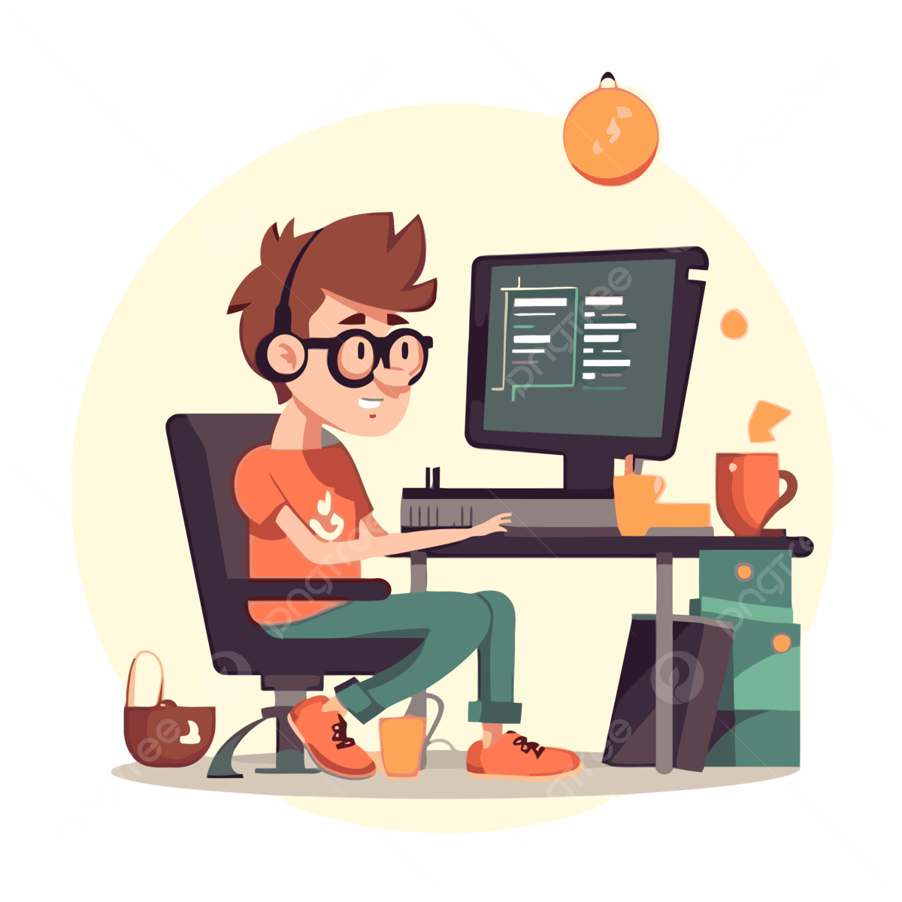
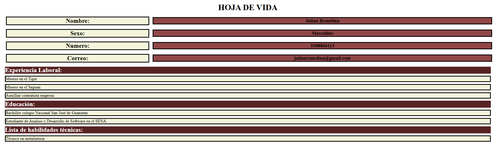
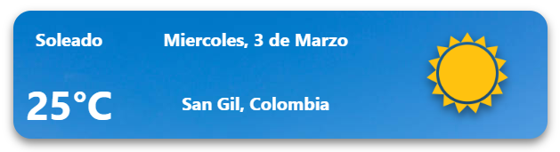
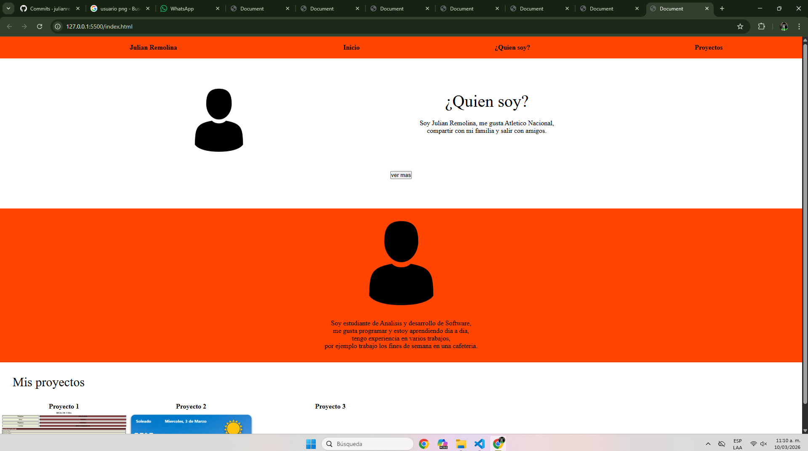
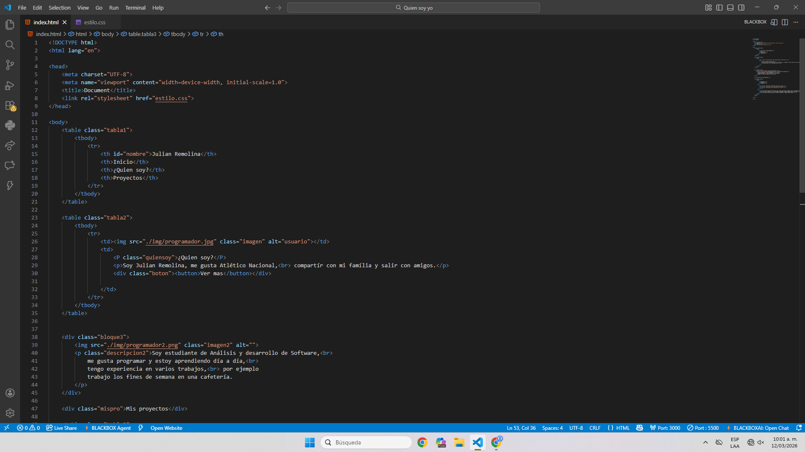

| Julian Remolina | Inicio | ¿Quien soy? | Proyectos |
|---|
|
¿Quien soy? Soy Julian Remolina, me gusta Atlético Nacional, |

Soy estudiante de Análisis y desarrollo de Software, me gusta programar y estoy aprendiendo día a día, tengo experiencia en varios trabajos, por ejemplo trabajo los fines de semana en una cafetería.
-Julian Remolina
| Proyecto 1 | Proyecto 2 | Proyecto 3 | Proyecto 4 |
|---|---|---|---|
|
 En este proyecto creamos una hoja de vida, usando unicamente conceptos basicos aprendidos en la primera clase, vimos conceptos como cambiar el color de los fondos y usar primeramente las tablas. |
 Acá hicimos un widget con conocimientos avanzados, usando tablas para su creacion y por ejemplo el uso de imagenes dentro de las tablas, tambien vimos el uso de tamaño de letras. |
 Acá hicimos un widget con conocimientos avanzados, usando tablas para su creacion y por ejemplo el uso de imagenes dentro de las tablas, tambien vimos el uso de tamaño de letras. |
 Este es el proximo proyecto que vamos a realizar, donde vamos a crear una pagina con GitHub para ver todos nuestros proyectos, esta pagina va a estar anclada a todos los demas proyectos para llevar control de ellos. |